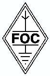

FOC:
First Class Operators Club
What is FOC?
FOC is a British based CW club, originally founded in 1938. The club
has a limited membership of 500 world-wide. The club strives for
excellence in operating, combined with a social way of life, both on
the air and together with family and members at events throughout the
world.